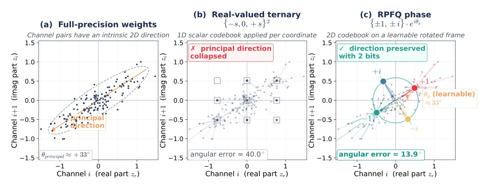
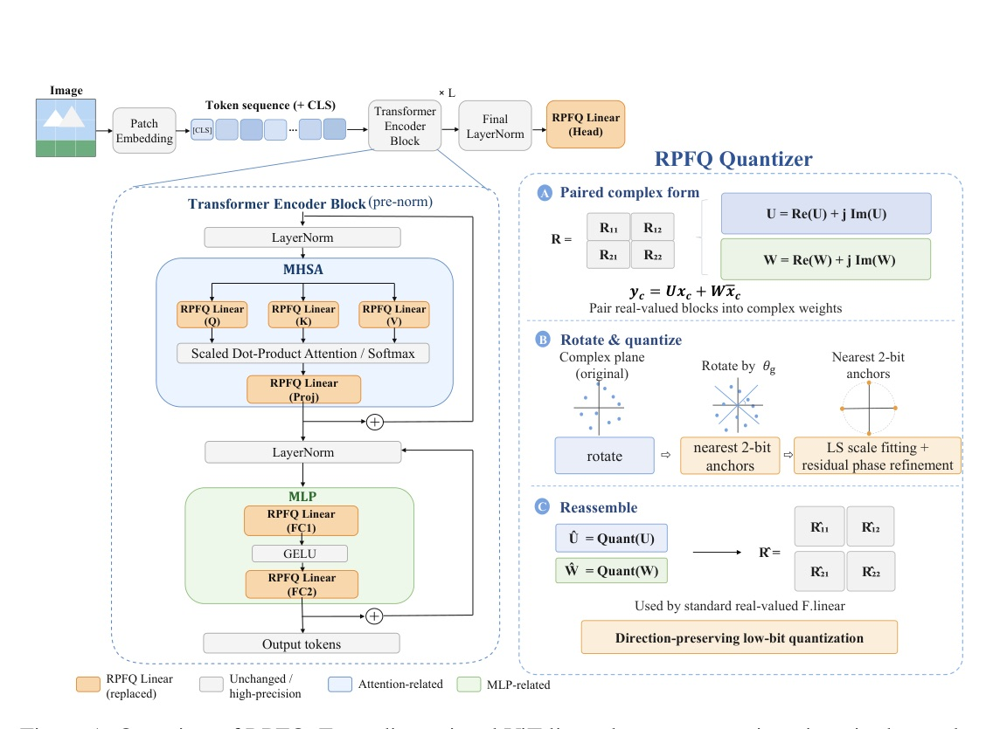
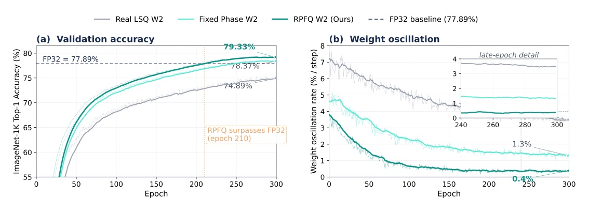
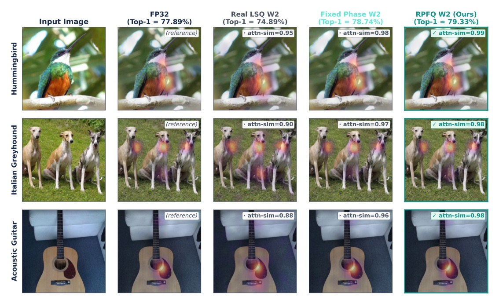

把 2-bit ViT 權重量化，從「逐 scalar 擬合」換成保留投影方向。
Full paper title: RPFQ-ViT: Rotated Phase-Frame Quantization for Extremely Low-Bit Weights in Vision Transformers
2-bit 的問題不只在幅度誤差。
ViT 更怕方向被量化到歪掉。


RPFQ REPLACES
STAYS HIGH PRECISION
極低 bit 的主因不是
「scalar 誤差太大」，而是投影方向沒有留下來。
| ViT-B/16 W2/A4 | Top-1 | Top-5 |
|---|---|---|
| Real scalar LSQ | 74.89 | 91.28 |
| Fixed phase frame | 76.56 | 92.83 |
| + residual refinement | 78.74 | 93.61 |
| + pre-aligned frame | 78.79 | 93.78 |
| RPFQ full | 79.33 | 94.48 |
| W2/A4; normalized to real LSQ | Angular error | Attention-score MSE | Feature cosine | Top-1 |
|---|---|---|---|---|
| Real LSQ | 1.00 | 1.00 | 0.931 | 74.89 |
| Fixed phase frame | 0.57 | 0.61 | 0.971 | 78.74 |
| RPFQ full | 0.43 | 0.46 | 0.983 | 79.33 |

| Backbone / W2 | Method | Top-1 | Top-5 |
|---|---|---|---|
| ViT-B/16 | LSQ++KD (reproduced) | 75.10 | 92.18 |
| ViT-B/16 | RPFQ | 79.326 | 94.476 |
| DeiT-S | OFQ (reported) | 75.72 | — |
| DeiT-S | RPFQ | 77.41 | 93.11 |
| Swin-T | OFQ (reported) | 78.52 | — |
| Swin-T | RPFQ | 79.298 | 94.792 |
| Comparison | Gap (pt) | 95% CI (pt) |
|---|---|---|
| ViT-B/16: RPFQ vs FP32 | +1.44 | [0.93, 1.95] |
| ViT-B/16: RPFQ vs LSQ++KD | +4.23 | [3.71, 4.75] |
| DeiT-S: RPFQ vs OFQ | +1.69 | [1.17, 2.21] |
| Swin-T: RPFQ vs OFQ | +0.78 | [0.27, 1.28] |
These are conservative independent-proportion intervals on the fixed 50k validation set; they do not replace the three-seed protocol.
| Model / runtime | Size MB | p50 latency ms | Speedup |
|---|---|---|---|
| iOS ViT-B/16 FP32 | 338.6 | 86.4 | 1.00x |
| iOS RPFQ ViT-B/16 | 47.7 | 54.9 | 1.57x |
| Android ViT-B/16 FP32 | 338.6 | 123.6 | 1.00x |
| Android RPFQ ViT-B/16 | 47.7 | 78.1 | 1.58x |
WHAT IS SHOWN
WHAT REMAINS
| ViT-B/16 setting | Protocol | 300-epoch total |
|---|---|---|
| RPFQ W2/A4 | single-stage QAT; no aux branch | 46.55 h / 1.94 d |
| Q-ViT W2/A4 | teacher + DGD attention distill. | 160.21 h / 6.68 d projected |
| OFQ | QAT + CGA fine-tune | >=600 epochs |
RPFQ/Q-ViT use 8xH800-80GB and the same global batch size; Q-ViT runtime is profiled then projected.
SUPPORTED
NOT YET SHOWN
At very low precision, scalar codebooks can therefore preserve magnitude poorly and distort the directions that matter most.
在極低精度下，純量碼本即使想留住幅度，仍會扭曲真正關鍵的方向。§1 p.1
RPFQ's advantage is primarily geometric.
RPFQ 的優勢，主要是幾何上的。§4.5 p.8

For extremely low-bit ViTs, preserve local projection direction first; recover magnitude second.